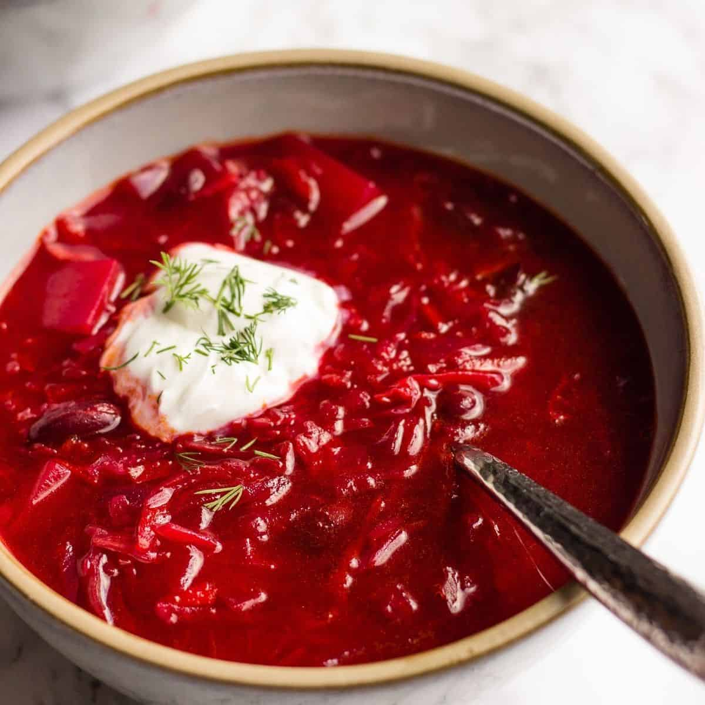

Borscht

Description
An elderly lady residing in Turkey served this Russian cabbage borscht to a friend of ours while he was in that country several years ago. She has since passed away, but her recipe lives on. It is the best Borscht recipe I've ever enjoyed. Serve topped with sour cream, extra dill weed, and chopped fresh tomatoes.
Ingredients
- 1 ½ cups thinly sliced potatoes
- 1 cup thinly sliced beets
- 4 cups vegetable stock or water
- 2 tablespoons butter
- 1 ½ cups chopped onions
- 1 teaspoon caraway seed (Optional)
- 2 teaspoons salt
- 1 celery stalk, chopped
- 1 large carrot, sliced
- 3 cups coarsely chopped red cabbage
- black pepper to taste
- ¼ teaspoon fresh dill weed
- 1 tablespoon cider vinegar
- 1 tablespoon honey
- 1 cup tomato puree
- sour cream, for topping
- chopped tomatoes, for garnish
Steps
- Place potatoes and beets in a medium saucepan over high heat; cover with stock and boil until vegetables are tender. Remove potatoes and beets with a slotted spoon; reserve stock.
- Melt butter in a large skillet over medium heat. Stir in onions, caraway seeds, and salt; cook until onions become soft and translucent. Stir in celery, carrot, and cabbage. Mix in reserved stock; cook, covered, until all vegetables are tender, about 10 minutes.
- Add potatoes and beets to the skillet. Season with black pepper and dill weed. Stir in cider vinegar, honey, and tomato puree. Cover, reduce heat to medium-low, and simmer for at least 30 minutes.
- Portion borscht into bowls. Top with sour cream, extra dill weed, and chopped tomatoes to serve.